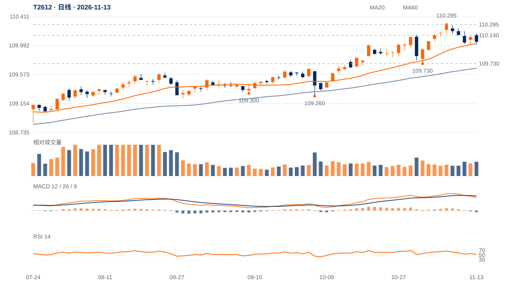

中期与日线尚未同步转弱
13日收110.045，略高于20日线110.019及60日线109.664；20周线109.479在下方。109.730较高低点及109.780—109.835上升窗口仍保持。
109.730上方仍有中期结构依据；日线近端守位反复，110.115—110.140未重夺前暂不提高修复权重。110.005—110.019是下一步最直接的承接检验。

查看大图 ↗先收回110.115—110.140并保持；中期增强仍用原110.295两日上破。
原109.95两日下破则下调，109.730实际失守否定该结构保持。
13日收110.045，略高于20日线110.019及60日线109.664；20周线109.479在下方。109.730较高低点及109.780—109.835上升窗口仍保持。
11月6日收110.280至今五日回落0.235点，约回吐前一0.440点收盘升波的53%。幅度已不浅，但109.95连续两日失守和109.730结构失效均未触发。
13日高开后弱收，量比1.36、位置24%；20日ER约0.13，近期净方向效率偏低。原升势并未自动给出短线买方跟进。
日MACD柱转负且本周回落，若110附近反弹持续不能收回110.14，回调可能向109.95甚至109.730扩展。主力减仓不能单独解释为卖方身份。